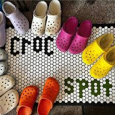

All Croc stores have the best Crocs™ shoes that are uniquely designed and manufactured using the company's proprietary closed-cell resin, Croslite™, a technology that gives each pair of shoes the soft, comfortable, lightweight, non-marking and odor-resistant qualities that Crocs wearers know and love.
Gallery
